A jelenlegi keret | |
Kapusok | |
| Thibaut Courtois | 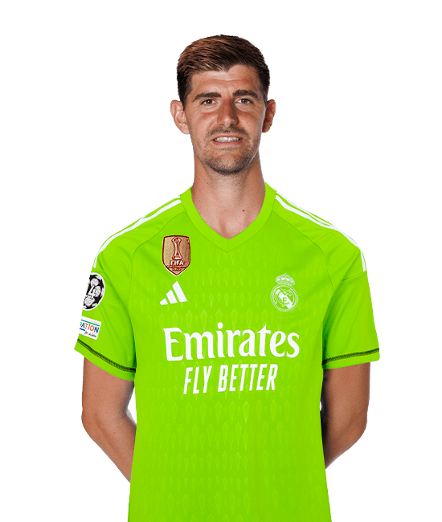 |
| Andriy Lunin |  |
Védők | |
| Dani Carvajal | 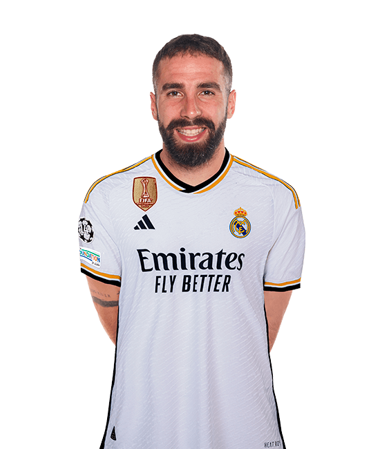 |
| Eder Militao | 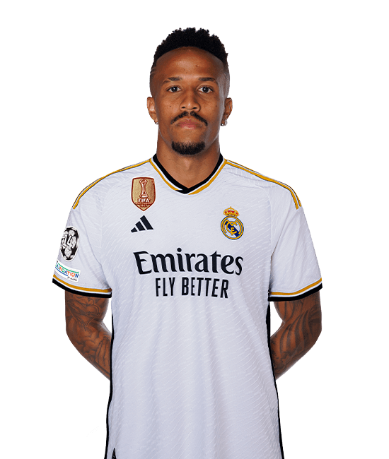 |
| David Alaba | 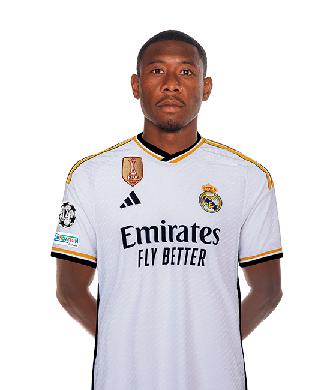 |
| Nacho Fernandez | 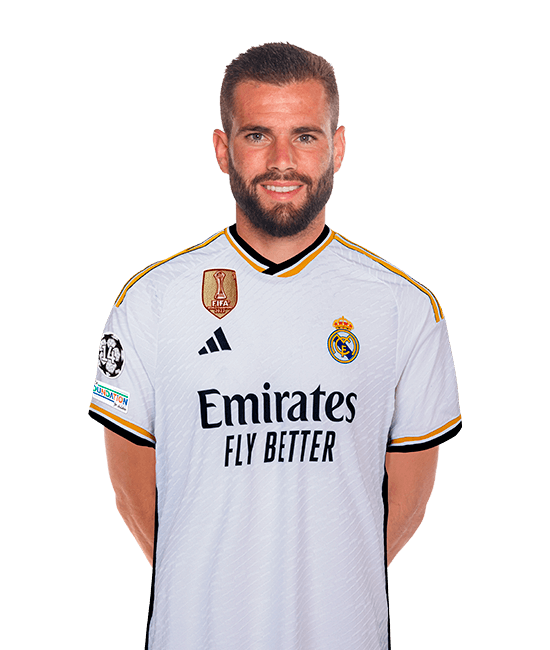 |
| Álvaro Odriozola | 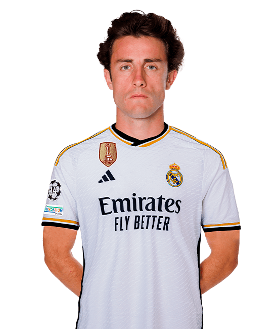 |
| Lucas Vazquez | 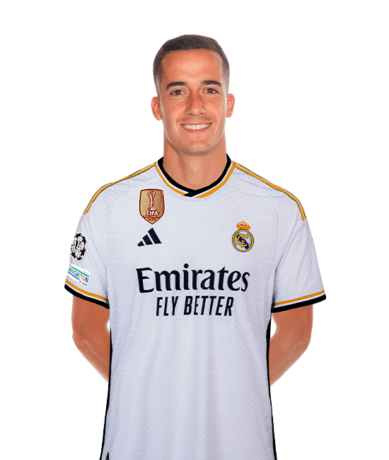 |
| Fran García | 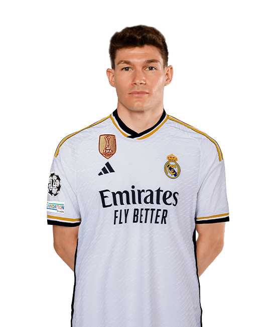 |
| Antonio Rüdiger | 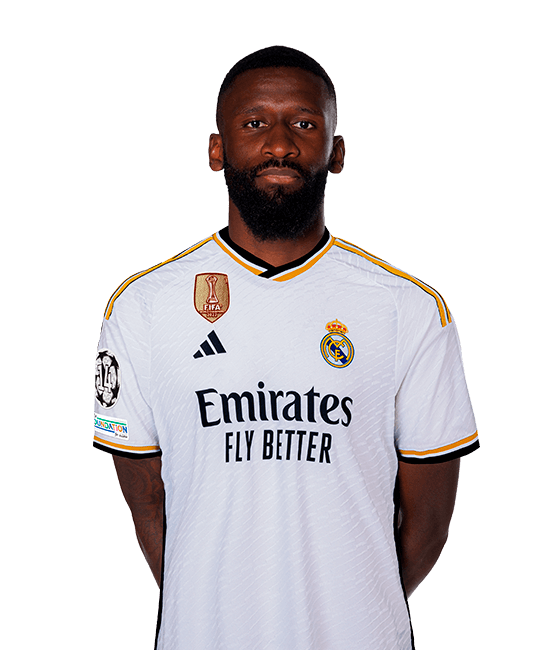 |
| Ferland Mendy | 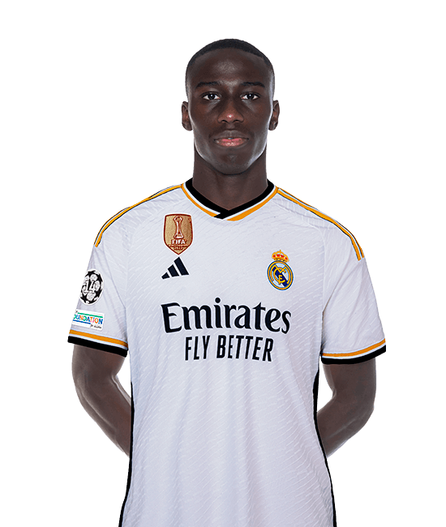 |
| Jesus Vallejo | 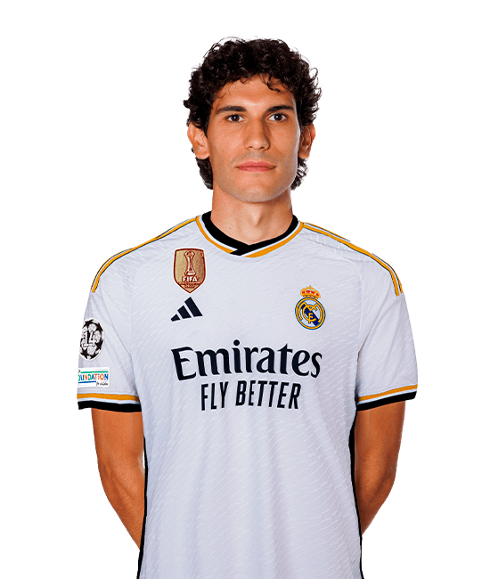 |
Középpályások | |
| Jude Bellingham | 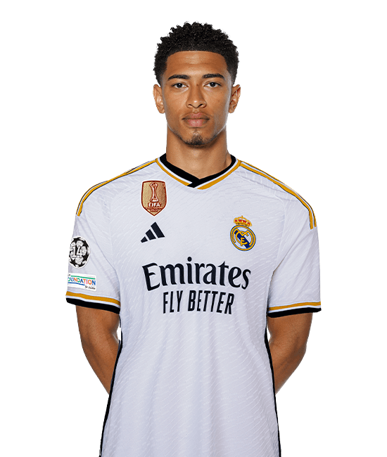 |
| Toni Kroos | 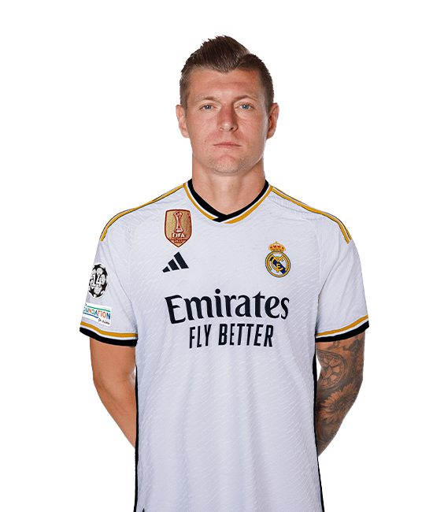 |
| Luka Modric | 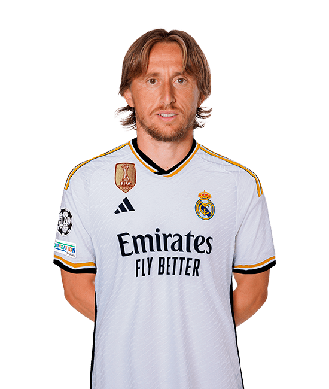 |
| Eduardo Camavinga | 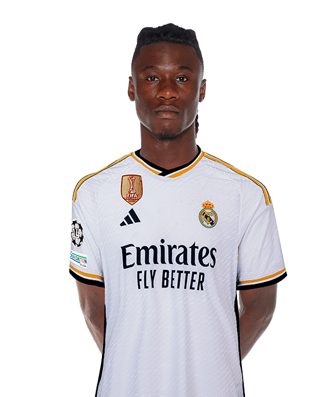 |
| Fede Valverde | 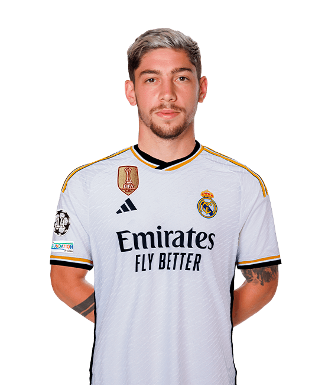 |
| Aurelien Tchouameni | 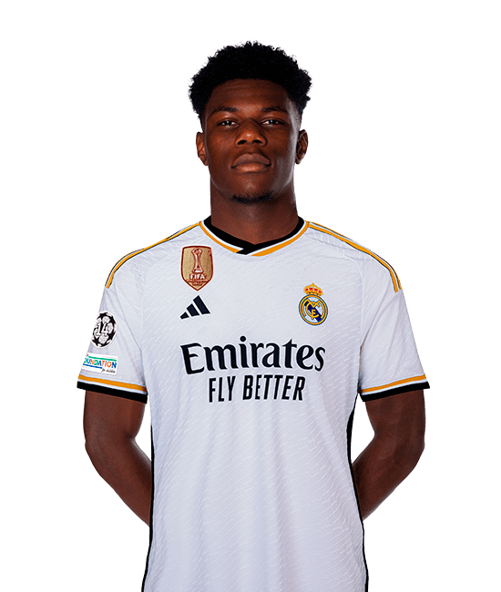 |
| Dani Ceballos | |
Támadók | |
| Vini Jr. | 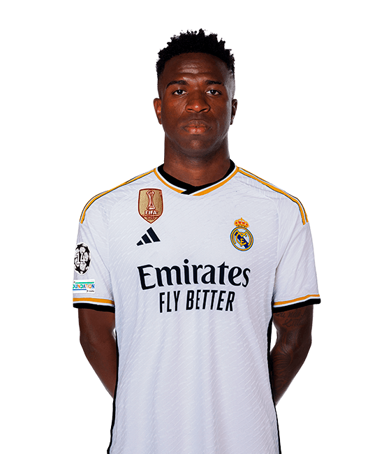 |
| Rodrygo | 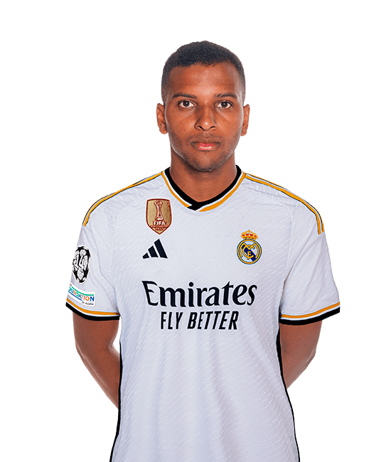 |
| Joselu | 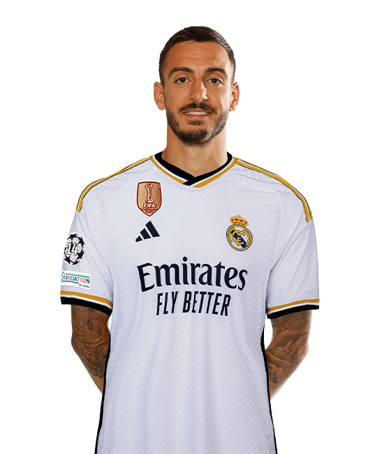 |
| Brahim Diaz | 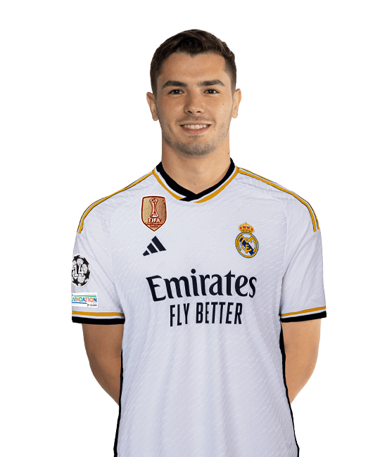 |